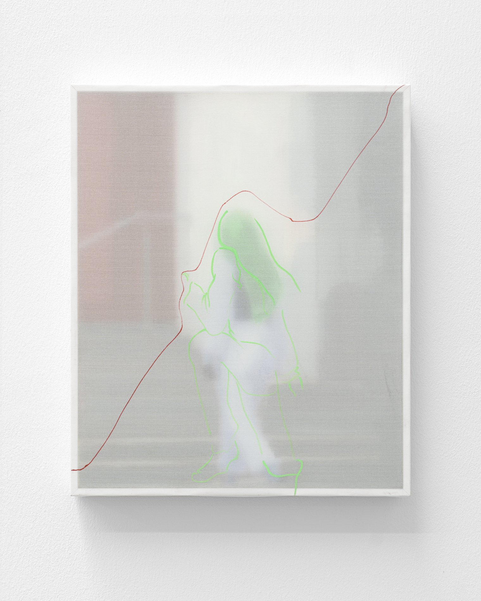
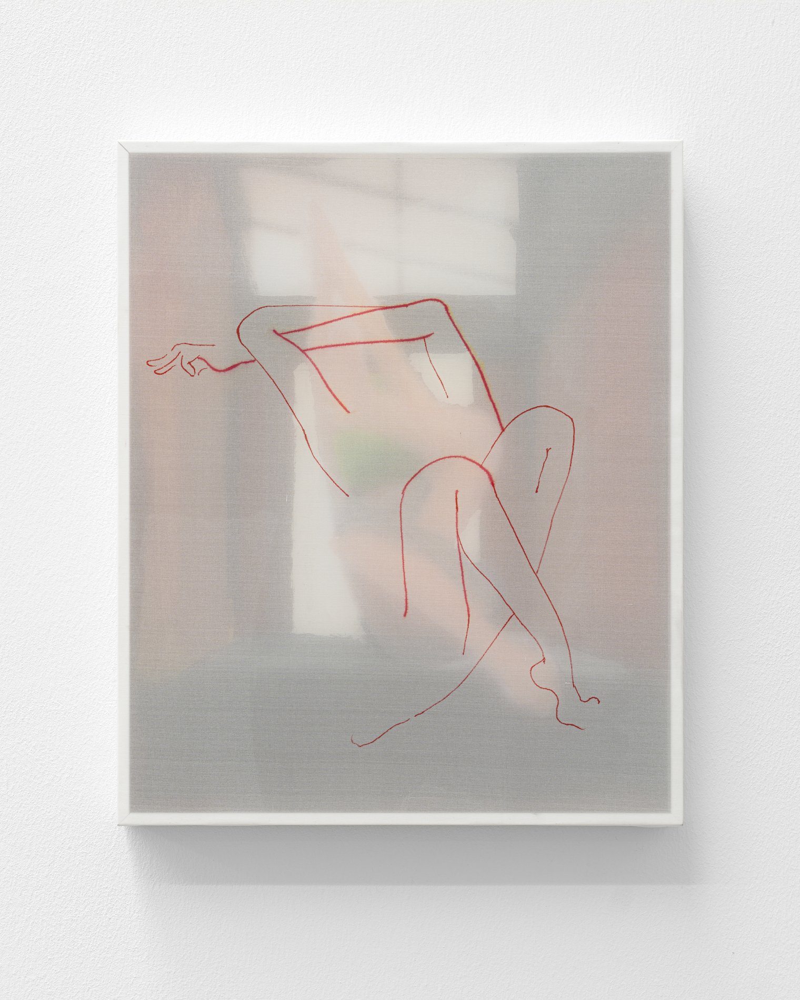

Skip to content
Tong Yin
Menu
Works
Selected Works
Archive
Exhibitions
Contact
EN
/
中文
[Add year]
The Boundary

The Boundary
[Add year] — [Add medium]
[Add dimensions]

The Boundary 2
[Add year] — [Add medium]
[Add dimensions]
← The Stranger
Saint Sebastian →